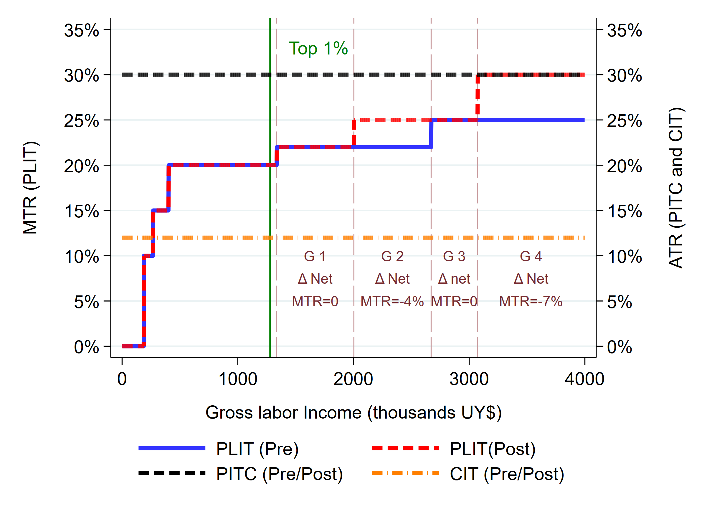

Download
Abstract
This paper presents new evidence on how top-income earners react to personal income taxation, uncovering the different margins of responses. By combining rich administrative records and variation in the tax rates for the top 1% income earners induced by a tax reform in Uruguay, we estimate an intensive margin elasticity of 0.577, partially explained by a real labor supply adjustment. Responses on the extensive margin are larger (semi-elasticity of 2.479), driven mainly by labor-to-corporate income shifting (semi-elasticity of -1.967). Our welfare analysis suggests that the efficiency losses associated with the reform represent at most 31% of the projected increase in tax revenue, implying that the new top tax rates are on the “correct” side of the Laffer curve.
Figure: Marginal and Average Tax Rate - Uruguay 2012
